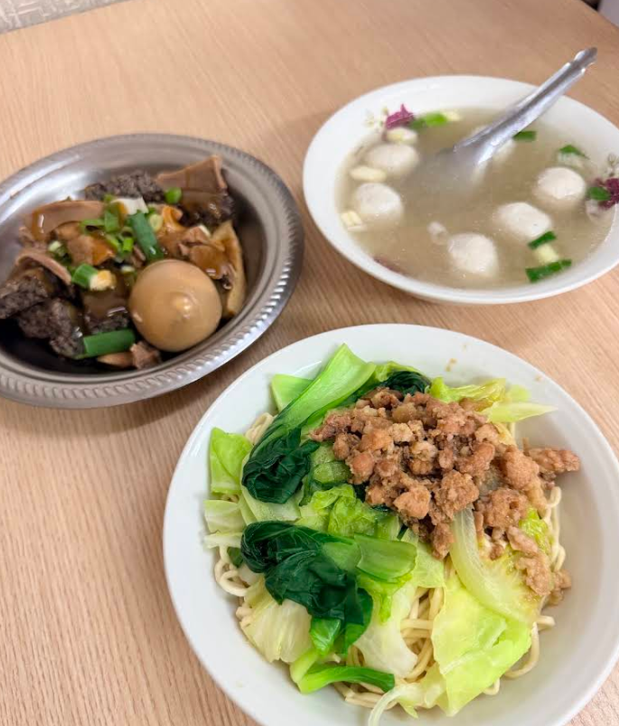
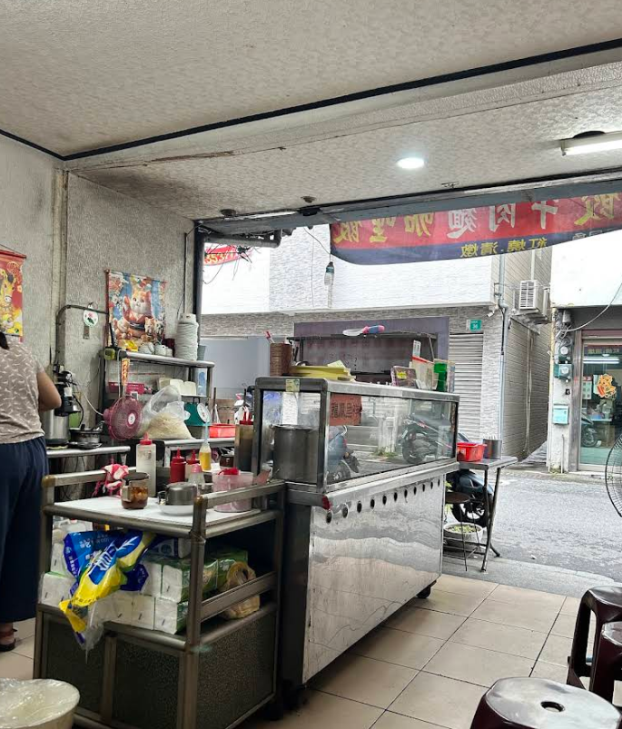

真實美味
顧客實拍分享
老饕與在地客人的真實用餐記錄，色香味俱全（點擊照片可放大欣賞）




「龍鳳同心億麵館」坐落於台南市北區南園街，是一間深受在地老饕喜愛的私房小吃。沒有華麗喧囂的裝潢，有的是數十年如一日對火候與食材的真摯堅持。
老闆與老闆娘為人真誠親切，每日一早親自熬煮大骨鮮湯、滷製入味軟嫩的豬排與招牌小菜。在這裡，您不僅能嚐到最道地的古早風味，更能感受到親切的問候與家的溫暖。每一碗熱騰騰的麵，都承載著獻給每位顧客的誠意與祝福。

老饕與在地客人的真實用餐記錄，色香味俱全（點擊照片可放大欣賞）

台南市北區南園街23號
在 Google 地圖開啟導航市話：(06) 235-5862 手機：0981-786-185
歡迎提前來電預訂外帶，節省現場等候時間午餐：10:30–14:00
晚餐：16:00–20:00
每週五固定公休
提供內用（設有冷氣座席）與外帶服務；付款方式以現金交易為主。